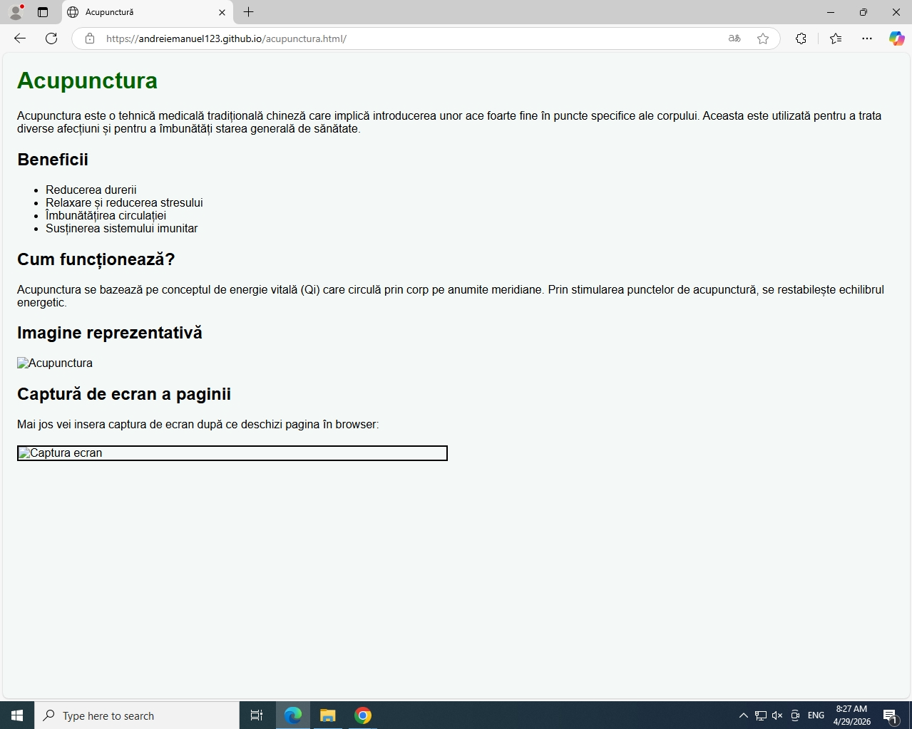

Acupunctura este o tehnică medicală tradițională chineză care implică introducerea unor ace foarte fine în puncte specifice ale corpului. Aceasta este utilizată pentru a trata diverse afecțiuni și pentru a îmbunătăți starea generală de sănătate.
Acupunctura se bazează pe conceptul de energie vitală (Qi) care circulă prin corp pe anumite meridiane. Prin stimularea punctelor de acupunctură, se restabilește echilibrul energetic.

Mai jos vei insera captura de ecran după ce deschizi pagina în browser:
